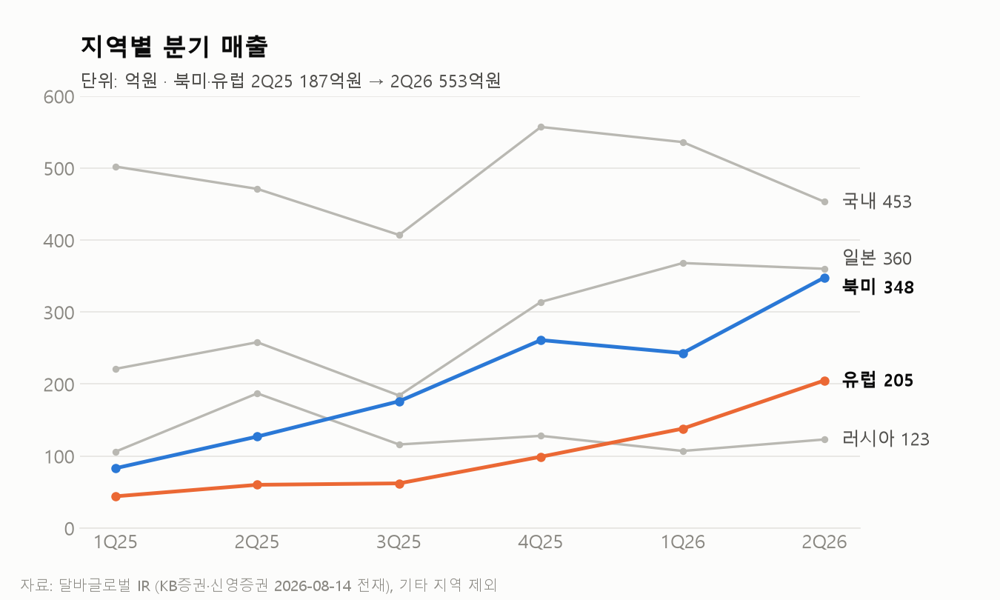
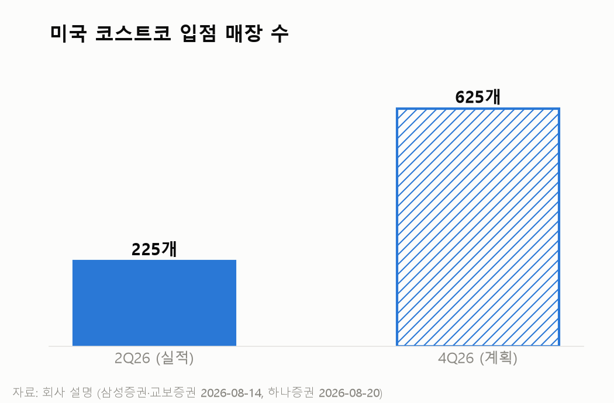
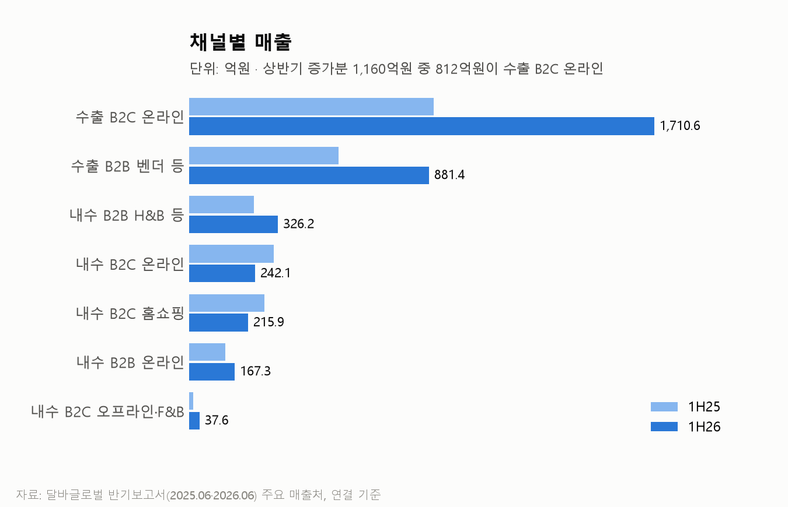
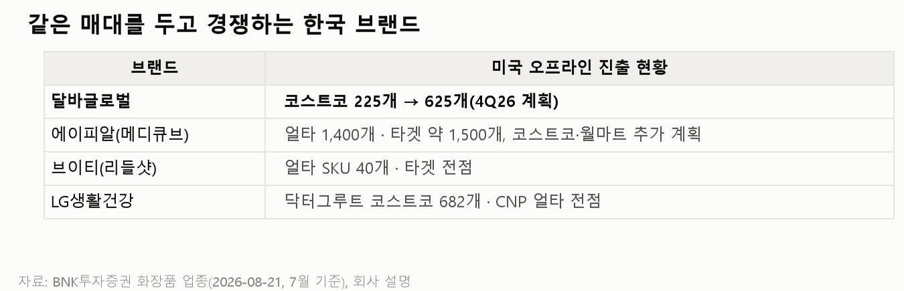
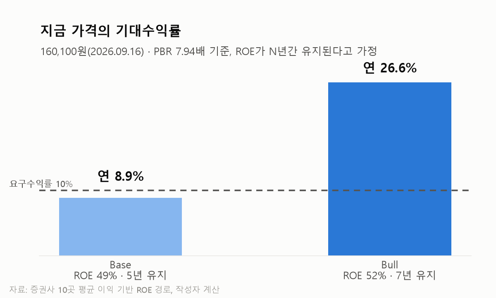
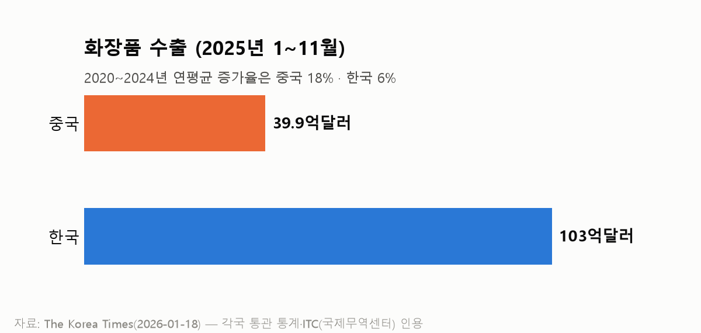

달바글로벌 북미·유럽 매출은 어떻게 1년만에 3배가 됐을까?
달바글로벌 반기보고서와 8월 증권사 리포트를 보다가, 숫자 하나가 눈에 걸려서 정리해 봅니다.
1매출 이야기
5~12번은 해외 매출이 잡히는 방식을 설명하는 내용이라, 아는 내용이면 스킵하면 됩니다.
1. 달바글로벌의 2026년 2분기 북미·유럽 매출은 553억원임. 1년 전 같은 분기에는 187억원이었으니, 1년 만에 약 3배가 된 것임.

2. 달바글로벌은 화이트 트러플 원료를 앞세운 화장품 브랜드 d'Alba(달바)를 기획해서 파는 회사임. 공장은 없고, 비앤비코리아·한국콜마 같은 외주 제조사(OEM)에서 완제품을 사 와서 팖.
3. 2025년 5월 유가증권시장에 상장했고, 2025년 매출은 5,197억원이었음. 2024년 45.6%였던 수출 비중은 2026년 상반기 72.4%까지 올라감.
4. 이렇게만 보면 "K-뷰티가 미국·유럽에서 잘 팔리는구나" 하고 읽힘. 틀린 말은 아니지만, 이 숫자에는 조심해서 볼 부분이 섞여 있음.
5. 달바글로벌이 해외 새 시장에 들어가는 순서는 정해져 있음. 먼저 아마존 같은 온라인몰에서 소비자에게 직접 팔아 이름을 알림. 소비자에게 직접 파는 이 방식을 B2C(기업-소비자 거래)라고 부름.
6. 이름이 알려지면 얼타·코스트코 같은 현지 오프라인 유통사로 넓힘. 오프라인은 유통사가 물건을 사서 매대에 까는 방식이라 B2B(기업 간 거래)가 됨.
7. 두 방식은 매출이 잡히는 리듬이 다름. 온라인 B2C는 할인 행사가 언제 열리느냐에 따라 출렁이고, 오프라인 B2B는 입점한 매장 수와 유통사가 발주를 넣는 주기에 따라 움직임.
8. 여기서 중요한 게 B2B 매출이 잡히는 시점임. B2B 발주는 물건을 배에 실어 보낼 때(선적) 매출로 잡힘. 소비자가 매장에서 사 갔는지와 상관없이, 유통사로 출발한 물건은 달바글로벌 매출이 됨.
9. 동네에 편의점이 새로 문을 연다고 가정해 봄.
10. 문을 열기 전에 빈 매대부터 채워야 하니, 음료 회사는 첫 주에 냉장고 한 칸을 가득 채울 만큼 물건을 넣음. 음료 회사 장부에는 이 첫 입고가 그대로 매출로 찍힘. 둘째 주부터는 손님이 사 간 만큼만 다시 채움.
11. 편의점 10곳이 한꺼번에 문을 열면, 음료 회사 매출은 그 분기에 확 튀어 오름. 그 매출이 이어질지는 첫 입고가 아니라 두 번째, 세 번째 발주를 봐야 알 수 있음.
12. 매대를 처음 채우는 물량을 초도 물량, 팔린 만큼 다시 채우는 물량을 재발주(리오더)라고 부름.
13. 달바글로벌이 지금 편의점이 한꺼번에 문을 여는 구간에 있음. 해외 오프라인 매장은 2026년 1분기 약 8,000개에서 2분기 9,607개로 늘었고, 미국 코스트코는 2분기 225개에서 4분기 625개까지 입점을 늘릴 계획임. 삼성증권·교보증권·하나증권 리포트에 실린 회사 설명임.

14. 다만 편의점 비유와 다른 점이 하나 있음. 편의점은 첫 주와 둘째 주가 나뉘지만, 달바글로벌은 매장이 계속 늘어나는 중이라 초도 물량과 재발주가 같은 분기에 섞여 들어옴.
15. 회사는 2분기 북미 매출에 코스트코·얼타 리오더 약 80억원이 들어 있다고 설명함(KB증권). 그런데 같은 분기에 새 매장도 늘었으니, 북미 348억원 중 어디까지가 첫 입고인지는 숫자로 나눌 수 없음.
16. 재발주율, 매장당 판매량, 소비자가 실제로 사 간 양(sell-out), 유통 재고는 공시되지 않음.
17. 여기까지 보면 "그럼 북미·유럽 성장은 초도 물량 덕분이구나" 하고 생각할 수 있음. 그런데 채널별 숫자를 보면 이야기가 조금 달라짐.

18. 2026년 상반기 매출은 3,581억원으로 1년 전보다 1,160억원 늘었음. 늘어난 1,160억원 중 812억원(70.0%)이 아마존·틱톡샵 같은 수출 B2C 온라인에서 나왔고, 오프라인 발주인 수출 B2B는 332억원 늘었음.
19. 전체 매출에서 B2B가 차지하는 비중도 38.0%에서 38.4%로 거의 그대로임. 뉴스에서는 코스트코 입점이 크게 보였지만, 상반기 성장을 끌고 간 건 온라인이었다는 말임.
20. 온라인에는 초도 물량 문제가 없는 대신, 행사 시점에 따라 출렁인다는 다른 약점이 있음. 올해는 아마존 프라임데이 매출이 3분기가 아니라 2분기에 잡혔음(신한투자증권·NH투자증권).
21. 2분기 숫자에는 매대를 처음 채운 물량과 앞당겨진 행사 매출이 같이 섞여 있을 수 있는 것임.
22. 코스트코 매대가 달바글로벌만의 자리도 아님.

23. 에이피알(메디큐브)은 미국 얼타 1,400개·타겟 약 1,500개에 들어가 있고, 코스트코·월마트도 추가할 계획임. LG생활건강 닥터그루트는 코스트코 682개에 들어가 있음(BNK투자증권, 7월 기준).
24. 입점은 경쟁사도 따내는 조건이라, 매대를 지키려면 매장에서 팔려서 재발주가 들어와야 함.
25. 한 가지 더 볼 게 있음. 새 지역이 3배가 되는 동안 기존 지역은 멈췄음.
26. 2분기 국내 매출은 471억원에서 453억원으로, 러시아는 187억원에서 123억원으로 줄었음. 일본은 1분기 368억원에서 2분기 360억원으로 증가가 멈췄음.
27. 회사는 선크림 PP 용기 수급 차질, 러시아 고객사 와일드베리 창고의 전쟁 피해, 일본 큐텐의 성장 둔화를 이유로 설명함. 용기가 부족했던 거라면 하반기에 회복되고, 채널이 포화된 거라면 회복되지 않을 것임.
28. 상반기에는 매출의 10.1%(362억원)를 차지하는 고객 A가 새로 생겼는데, 누구인지는 공시되지 않음. 코스트코인지, 일본 벤더인지, 러시아 유통사인지에 따라 의미가 달라짐.
2기대수익률
29. 여기까지가 매출 이야기임. 이제 지금 가격에 사면 수익률이 얼마나 될지 계산해 봄.
30. 워렌 버핏은 1972년 씨즈캔디를 2,500만달러에 샀음. 회사의 순유형자산은 800만달러였으니, 장부가의 3배 넘게 준 것임.
31. 버핏은 이 가격을 ROE로 설명했음. 씨즈캔디는 빚 없이 순유형자산 대비 세후 25%를 벌고 있었고, 이런 회사는 드물어서 장부가보다 비싸게 줄 만하다는 것임.
32. 증권사 리포트는 보통 내년 이익에 PER 몇 배를 곱해서 목표주가를 냄. 여기서는 PER 멀티플 대신, 버핏이 씨즈캔디를 샀던 방식으로 달바글로벌의 기대수익률을 계산해 봄.
33. 계산은 단순함. 달바글로벌의 ROE가 앞으로 N년간 유지된다고 가정했을 때, 1년에 몇 %가 남는지를 봄.
34. 달바글로벌은 9월 16일 종가 160,100원 기준으로 장부가(주당 20,155원)의 7.94배임. 증권사 10곳의 평균 이익으로 그린 2026~2028년 ROE는 평균 49%임.
35. 핵심변수는 ROE를 몇 %로 보느냐, 그 ROE가 몇 년 이어지느냐임. 그래서 Base와 Bull 두 경우로 나눠 봄.
36. Base는 ROE 49%가 5년 유지되는 경우임. 증권사 추정이 있는 2028년 뒤로 2년 정도 더 이어진다고 보는 것이고, 이때 기대수익률은 연 8.9%임.
37. Bull은 ROE 52%가 7년 유지되는 경우임. 해외 매장 확대가 재발주로 이어지고 쌓인 현금도 주주 몫으로 굴러가는 경우이고, 이때 기대수익률은 연 26.6%임.

38. 지금 가격의 기대수익률은 연 9~27% 밴드로 볼 수 있음. Base면 연 10%에 조금 못 미치고, Bull이면 넉넉히 넘는 가격임.
39. 이 밴드는 결국 ROE가 얼마나 오래 버티느냐에 달려 있음. 그러려면 먼저 지금까지 ROE가 왜 높았는지를 알아야 함.
40. 달바글로벌의 ROE는 2025년 52.6%, 최근 4개 분기 기준 49.4%임. 사업으로 보면 이유는 두 가지임.
41. 첫번째는 비싸게 파는 구조라는 점임. 아마존·틱톡샵 같은 온라인에서 소비자에게 직접 파는 매출이 커서, 상반기 매출 3,581억원 중 1,710.6억원이 수출 B2C 온라인이었음. 소비자가격을 그대로 매출로 인식하니 매출총이익률이 76.8%까지 나옴.
42. 두번째는 매출이 빨리 늘었다는 점임. 매출은 2023년 +38.3%, 2024년 +53.9%, 2025년 +68.2% 늘었고, 영업이익률은 19%대를 지켰음. 이익률은 그대로인데 매출 규모가 급증하다 보니, 자본이 불어나는데도 ROE가 유지된 것임.
43. 찰리 멍거는 "내가 어디서 죽을지만 알면, 거기에는 절대 가지 않겠다"는 말을 자주 했음. 이 방식으로 뒤집어 보면, ROE가 꺾이는 건 이 두 이유가 사라질 때임.

44. 첫번째 시나리오는 중국 제품의 시장 진입임. 2025년 1~11월 화장품 수출은 중국 39.9억달러, 한국 103억달러로 아직 2.6배 차이가 남. 다만 2020~2024년 연평균 수출 증가율은 중국이 18%로 한국(6%)의 세 배였고, 미국 얼타도 중국 뷰티 브랜드를 들이기 시작했다는 보도가 있음.
45. K-뷰티가 미국에서 먹힌 건 품질에 비해 가격이 부담 없다는 점이었음. 중국 제품이 비슷한 품질을 더 싼 값에 들고 오면, 아마존·틱톡샵에서 소비자가격을 그대로 받기가 어려워짐.
46. 두번째 시나리오는 매출 성장이 꺾이는 것임. 앞에서 본 것처럼 지금의 매출 성장에는 매장이 늘어나는 동안의 초도 물량이 섞여 있음. 매장 확대가 끝났는데 재발주가 붙지 않으면 매출 성장이 꺾이고, 이익도 자본이 쌓이는 속도를 못 따라감.
47. 이 시나리오는 4분기 북미·유럽 매출로 확인 가능할 것으로 보임. 코스트코 입점 확대가 끝나는 4분기에 2분기 553억원 아래로 내려가면 성장이 꺾이는 쪽이고, 700억원을 넘으면 재발주가 붙어 매출이 계속 빨리 늘어나는 쪽임.
주: 원고는 2026-09-11 종가 167,600원(PBR 8.32배, Base 연 8.0%·Bull 연 25.8%) 기준이며, 게시본은 2026-09-16 종가 160,100원으로 PBR·기대수익률만 다시 계산함. ROE·유지 기간 가정은 원고 그대로임.
3한줄 코멘트
달바글로벌 북미·유럽 매출은 1년 새 187억원에서 553억원으로 약 3배가 됐지만, 매장이 늘어나는 구간이라 매대를 처음 채운 물량과 앞당겨진 프라임데이 매출이 섞여 있음. 버핏이 씨즈캔디를 산 방식으로 계산하면, 지금 가격의 기대수익률은 ROE 49%가 5년 유지되는 Base에서 연 8.9%, ROE 52%가 7년 유지되는 Bull에서 연 26.6%임. 그 ROE가 높았던 건 낮은 원가로 만든 제품을 소비자에게 직접 비싸게 팔면서 매출이 빨리 늘었기 때문임. 다만, 중국 제품 시장 진입으로 비싸게 파는 구조가 흔들리고 재발주까지 꺾이면, 현재 수준의 ROE는 유지되기 어렵고 기대수익률은 마이너스가 될 수 있음. 4분기 북미·유럽 매출을 모니터링할 필요가 있음.